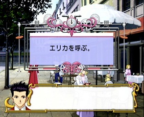
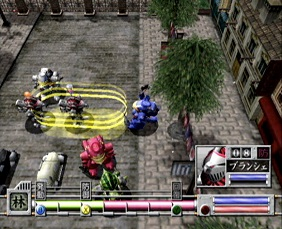

Beginner Tips
Seven operational habits cover every Dreamcast-specific quirk in サクラ大戦3. Mastering Analog LIPS control, Action Point refunds, free-roam clock discipline, and VMU data management prevents missed trust thresholds and wasted turns.
Core Dreamcast Setup & Gameplay Habits
-
Prepare Dreamcast Save Files Before Starting
Place completed ビジュアルメモリ save data from Dreamcast サクラ大戦 and サクラ大戦2 in the controller slot before Episode 1. When 大神一郎 reminisces in his Paris apartment, the merged data unlocks bespoke Imperial Flower Division CGs and dialogue variations. -
Keep Your Eye on the Analog LIPS Level
During アナログLIPS prompts, move the Dreamcast analog stick up or down to set the 7-step gauge before confirming with A. If the timer runs out, the game locks in whatever notch the bar sits on at zero seconds, so leave it on notch 3 or 4 only when a measured response is required. -
Test ARMS Positions Before Committing an Action
Moving your 光武F with the analog stick turns segments of the ARMSゲージ red without spending them. Walk back toward your starting spot to reclaim red segments and line up lock-on shots, adjacent ally talks, or 合体攻撃 spacing before pressing A, B, X, or Y. -
Default to Mountain Tactics for Safe Boss Clears
Switch the Captain Command to 山 during heavy enemy waves and boss fights so every pilot can guard for 1 AP and self-heal for 3 AP. Use 火 on 大神一郎 when building 気合値 for specials, and shield fragile allies like エリカ・フォンティーヌ using かばう on boss Turn 1. -
Budget Every 5-Minute Hop on the Paris Map
Each destination move on the theater or Paris map advances the clock by 5 minutes, and every キネマトロン call in your apartment also costs 5 minutes. Visit 売店 early in every free-roam block so you purchase that episode's bromide before timed triggers pull you away. -
React Fast to Event Catches and VMU Signals
Timed イベントキャッチ pop-ups appear while traveling between districts and vanish if you wait too long. Watch your controller's ビジュアルメモリ screen for 携帯キネマトロン incoming calls during exploration and for enemy destruction percentages during combat lock-on. -
Maintain Dedicated Branching Saves
Keep separate ビジュアルメモリ saves at the start of every episode, right before the Episode 6 date choice, right before the Episode 9 副隊長 appointment, and at the Episode 10 shop. Those four anchors let you see multiple endings and register all Special Bromides into your system file.

